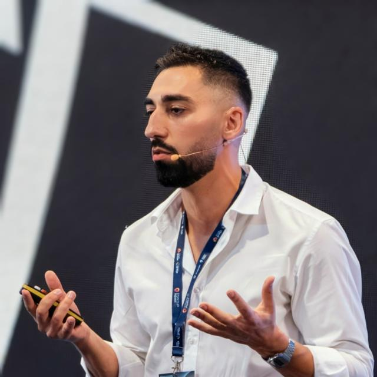
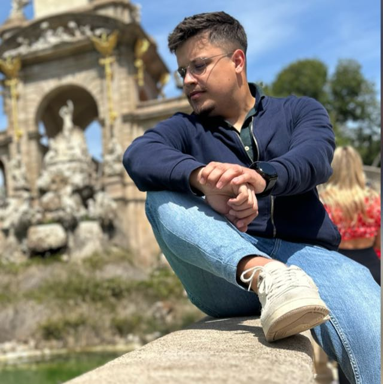
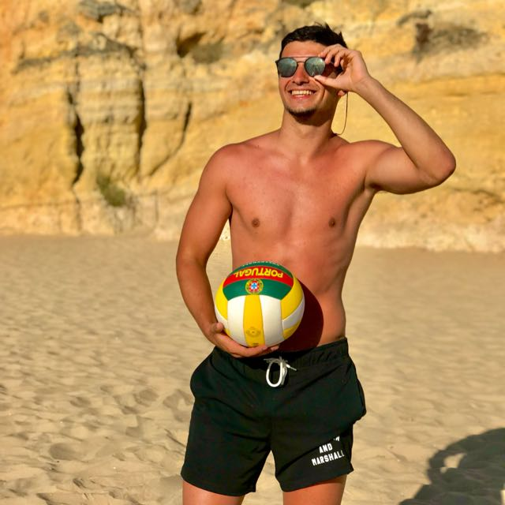
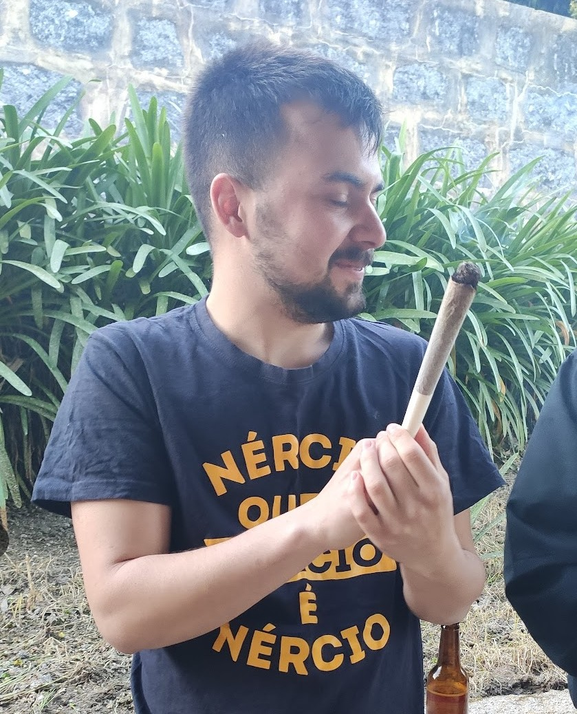
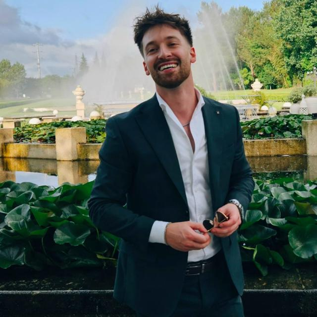
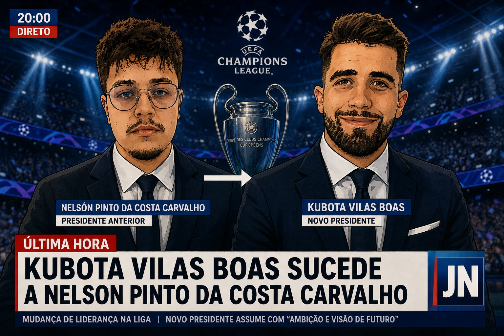

ARTIGO 1.º
Inscrição
Entrada de 5€ por jogador, paga antes do início da competição. Quem não pagar não entra.
Aqui não há amigos, há treinadores, rivais, especialistas de bancada e candidatos ao título de Chorão da Champions.
Leitura obrigatória antes de começar a chorar.
Entrada de 5€ por jogador, paga antes do início da competição. Quem não pagar não entra.
É obrigatório apresentar uma equipa válida em todas as jornadas. Falhaste? Multa de 1€.
Quem abandonar a competição a meio da época paga 5€ de multa. Não há VAR para fugir disto.
Em cada jornada, o grupo elege o maior chorão, caso exista. No final, o Rei do Choro acompanha o último classificado num penálti.
Amizades suspensas até o dia do jantar. No final da competição irá realizar-se um jantar de condecoração do campeão numa data escolhida pela maioria.
Os dez treinadores que vão lutar pelo título e pela dignidade.

Tetra
Nélson
Miguel
Marco
AndréConsulta a tabela oficial através do botão da UEFA no topo.
| # | Treinador | Pontos | Estado |
|---|---|---|---|
| 1 | Kubota | — | Pré-época |
| 2 | Tetra | — | Pré-época |
| 3 | Jackass | — | Pré-época |
| 4 | McNamara | — | Pré-época |
| 5 | Nélson | — | Pré-época |
| 6 | Alexandre | — | Pré-época |
| 7 | Marco | — | Pré-época |
| 8 | André | — | Pré-época |
| 9 | Rafa | — | Pré-época |
| 10 | Miguel | — | Pré-época |
O melhor jogador de cada jogo da jornada.
O registo oficial da hegemonia que esta época promete tentar derrubar.
Até hoje, o troféu pertenceu sempre a membros dos DST's. A temporada 2026/27 é a oportunidade para acabar com esta hegemonia ou confirmar que continuam a mandar nisto tudo.
A prova visual de que a Fantasy mexe com a dignidade de qualquer pessoa.

O fim de uma era histórica de Nelson.
Um registo oficial das desculpas mais fracas da época.
Jornada 1: Por decidir
Líder atual: Por decidir